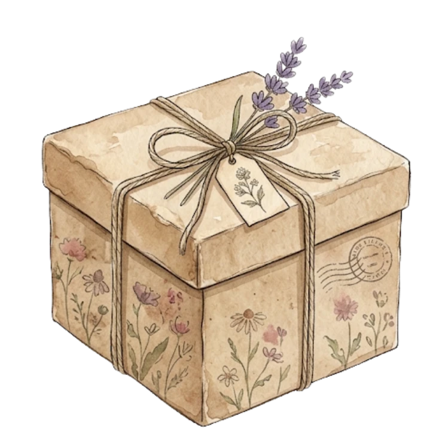
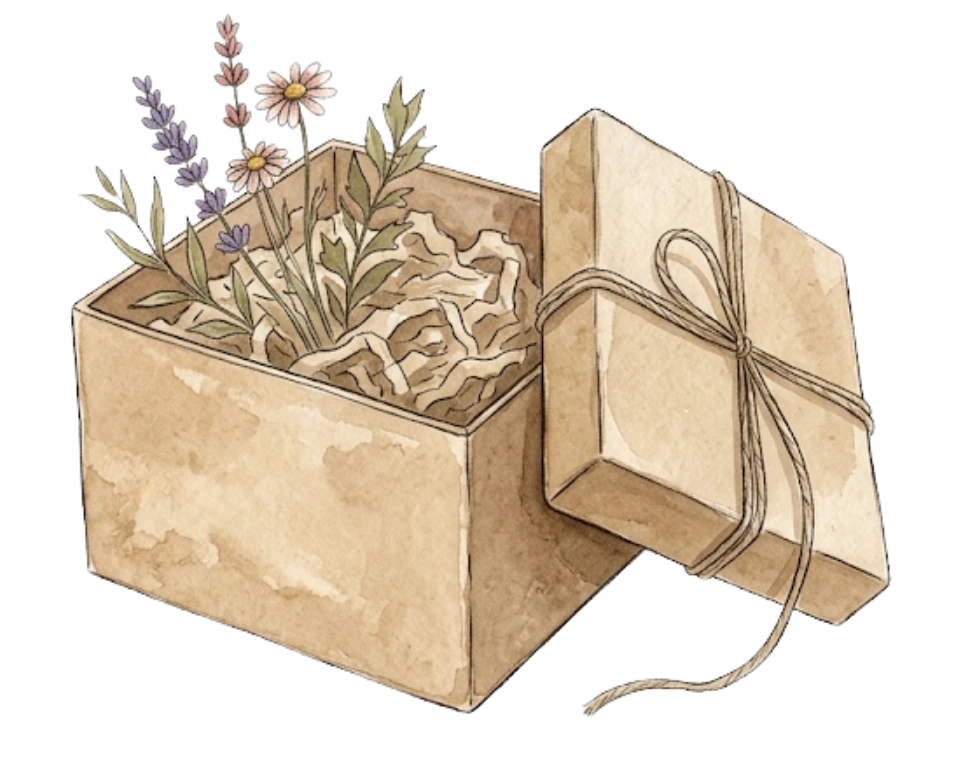

Flowers That Never Fade, for Aliya ♡


for my little gurl ♡
a little bouquet, just because you deserve it.

look what we’ve made ♡
just a bunch of little moments that became something special.
Kado Spesial Just For My Little Gurl
Sentuh kotak kado buat ngebuka

